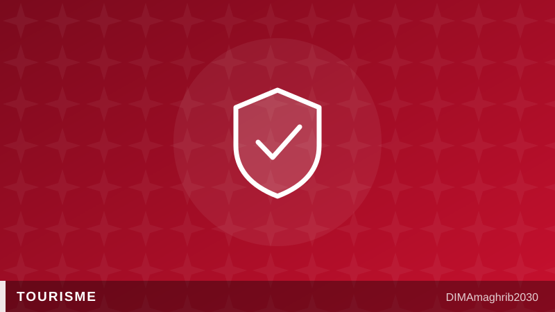

Le Maroc sacré destination la plus sûre d'Afrique, et les recettes touristiques s'envolentMorocco Named Africa's Safest Destination as Tourism Revenues Soar

Au cœur de l'été 2026, le tourisme marocain aligne les bonnes nouvelles. Le royaume vient d'être désigné destination la plus sûre d'Afrique par l'indice 2026 de sécurité touristique, avec un score de 73,25 sur 100 qui le place au 42e rang mondial, devant plusieurs destinations européennes très fréquentées. Une consécration qui tombe à point nommé, alors que les caisses du secteur n'ont jamais été aussi pleines.
Des recettes en hausse de 14,6 %
Selon les chiffres relayés début juillet par le média économique Médias24, les recettes voyages ont atteint 53,76 milliards de dirhams à fin mai 2026, en progression de 14,6 % par rapport à la même période de 2025. Le premier trimestre avait déjà donné le ton avec 31 milliards de dirhams encaissés, d'après Hespress. Après une année 2025 record à 19,8 millions de visiteurs, le Maroc avance plus vite que sa propre feuille de route : l'objectif de 26 millions de touristes à l'horizon 2030 semble désormais un plancher plutôt qu'un plafond, et une nouvelle ambition à 30 millions d'arrivées est déjà à l'étude.
Le marché français, premier bassin émetteur, confirme la tendance. Les professionnels français du voyage interrogés par La Vie Éco constatent des réservations pour l'été 2026 en hausse de plus de 13 % sur un an, faisant du Maroc l'une des valeurs les plus sûres de leur catalogue estival.
La sécurité, nouvel argument marketing
Ce classement de destination la plus sûre du continent n'est pas un détail. Dans un marché mondial où les voyageurs comparent tout, la sécurité perçue est devenue un critère de choix aussi décisif que le prix du billet. La Brigade touristique, présente dans toutes les grandes villes, et la stabilité du pays nourrissent une réputation que peu de destinations concurrentes de la région peuvent revendiquer.
Monter en gamme, chambre par chambre
Reste le chantier de la qualité. Depuis début mai, une campagne nationale de visites mystère passe au crible les hôtels du royaume afin de réformer un classement hôtelier vieillissant. L'objectif est simple : que les étoiles affichées à l'entrée correspondent enfin à l'expérience vécue dans la chambre. Pour un pays qui veut accueillir le monde en 2030, cette bataille de la qualité vaut bien celle des arrivées. Visiter le Maroc n'a jamais été aussi populaire ; y revenir doit devenir un réflexe.
Midway through summer 2026, Moroccan tourism keeps stacking up good news. The kingdom has just been ranked Africa's safest destination in the 2026 tourism security index, scoring 73.25 out of 100 and placing 42nd worldwide — ahead of several heavily visited European destinations. The timing could hardly be better, because the sector's coffers have never been fuller.
Travel receipts up 14.6%
According to figures reported in early July by business outlet Médias24, travel receipts reached 53.76 billion dirhams by the end of May 2026, up 14.6% on the same period of 2025. The first quarter had already set the tone with 31 billion dirhams collected, per Hespress. After a record 2025 with 19.8 million visitors, Morocco is running ahead of its own roadmap: the target of 26 million tourists by 2030 now looks like a floor rather than a ceiling, and a new ambition of 30 million arrivals is already under study.
France, the country's biggest source market, confirms the momentum. French travel professionals surveyed by La Vie Éco report summer 2026 bookings up more than 13% year on year, making Morocco one of the safest bets in their seasonal catalogue.
Safety as a marketing weapon
That "safest in Africa" ranking is no footnote. In a global market where travelers compare everything, perceived safety has become as decisive a factor as the price of the flight. The Brigade Touristique — the tourist police present in every major city — and the country's stability feed a reputation few competing destinations in the region can claim.
Moving upmarket, one room at a time
The remaining battleground is quality. Since early May, a nationwide campaign of mystery visits has been auditing the kingdom's hotels in order to overhaul an ageing star-rating system. The goal is simple: to make sure the stars on the door finally match the experience in the room. For a country preparing to host the world in 2030, this fight over quality matters as much as the race for arrivals. Visiting Morocco has never been more popular; coming back must become a habit.